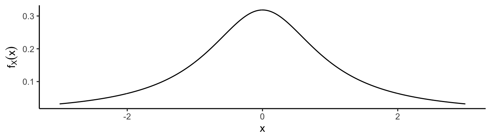
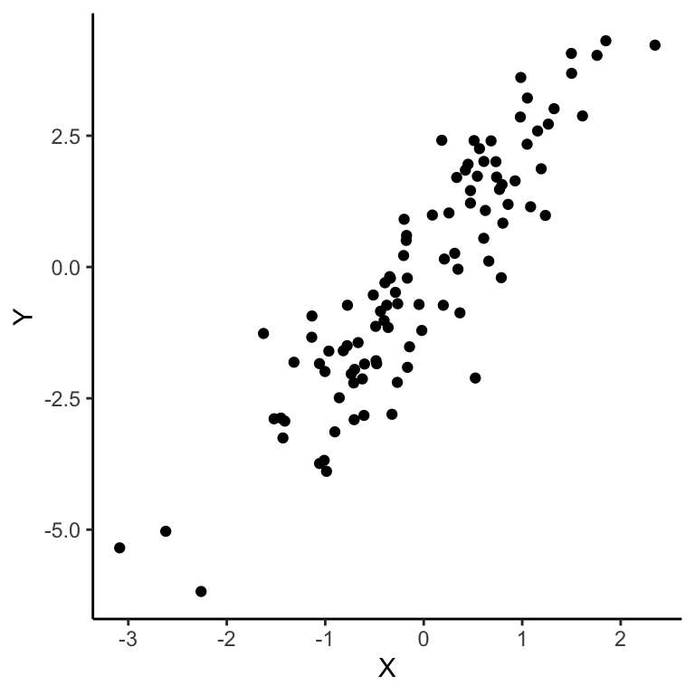

1.8 Expectations
The expected value, or expectation, of a random variable \(X\) is its average value weighted according to the probability distribution. Simply put, it signifies the arithmetic mean of a large number of independent realisations of \(X\).
Definition 1.17 (Expectation) The expected value or mean of a random variable \(X\), denoted \(\mathop{\mathrm{E}}(X)\), is defined to be \[ \mathop{\mathrm{E}}(X) = \begin{cases} \sum_x x f_X(x) = \sum_x x \mathbb{P}(X=x) &\text{if $X$ is discrete} \\ \int x f_X(x) \mathop{\mathrm{d}}\hspace{0.5pt}\!x &\text{if $X$ is continuous} \\ \end{cases} \] provided that the integral or sum exists (is finite).
The symbol ‘\(\mu\)’ is often used to denote the expected value. It may be represented by \(\mathop{\mathrm{E}}X\), \(\mathop{\mathrm{E}}[X]\) or even using \(\mathbb{E}\) instead of \(\mathop{\mathrm{E}}\).
The expectation of a random variable is not to be confused with the sample mean of a set of observations \(\{x_1,\dots,x_n \}\), i.e. \(\bar x_n = \frac{1}{n} \sum_{i=1}^n x_i\). The expectation is a purely theoretical value based on probabilities and pdfs. The sample mean incorporates randomness into the calculations, by virtue of the randomness of the observed set of sample values.
Example 1.24 Let \(X \in \{0,1\}\) take value 1 with probability \(p\), and 0 with probability \(1-p\). \(X\) is called a Bernoulli random variable, and we write \(X \sim \mathop{\mathrm{Bern}}(p)\). Then,
\[ \mathop{\mathrm{E}}(X) = \sum_x x\mathbb{P}(X = x) = 1\cdot p + 0 \cdot (1-p) = p. \]
Example 1.25 Let \(X\) be a continuous random variable with pdf \(f(x)=\frac{1}{b-a}\), where \(a,b\in\mathbb{R}\) and \(a<b\). \(X\) has what is called a uniform distribution on the interval \((a,b)\), and we write \(X\sim\mathop{\mathrm{Unif}}(a,b)\). The mean of \(X\) is
\[ \mathop{\mathrm{E}}(X) = \int_a^b \frac{x}{b-a} = \frac{a+b}{2}, \]
the midpoint of the interval \((a,b)\)! This reveals some intuition regarding uniformity of the distribution.
Do all random variables have expectations?
Example 1.26 
Let \(X\) be a continuous random variable with pdf \(f(x)=\{ \pi(1+x^2) \}^{-1}\) with support over \(\mathbb{R}\). This is the Cauchy distribution21 with location and scale parameter 0 and 1 respectively. Let’s calculate the mean.
Using the substitution \(u = x^2 + 1\) and \(\mathop{\mathrm{d}}\hspace{0.5pt}\!u/2 = x \mathop{\mathrm{d}}\hspace{0.5pt}\!x\), we find that \[\begin{align*} \mathop{\mathrm{E}}(X) &= \int_{-\infty}^\infty \frac{x \mathop{\mathrm{d}}\hspace{0.5pt}\!x}{\pi(1+x^2)} \\ &= \int_{-\infty}^0 \frac{x \mathop{\mathrm{d}}\hspace{0.5pt}\!x}{\pi(1+x^2)} + \int_{0}^\infty \frac{x \mathop{\mathrm{d}}\hspace{0.5pt}\!x}{\pi(1+x^2)} \\ &= \frac{1}{2\pi} \int_{u=\infty}^{u=1} \frac{\mathop{\mathrm{d}}\hspace{0.5pt}\!u}{u} + \frac{1}{2\pi} \int_{u=1}^{u=\infty} \frac{\mathop{\mathrm{d}}\hspace{0.5pt}\!u}{u} \\ &= \frac{1}{2\pi} \left[\log u \right]_{\infty}^{1} + \frac{1}{2\pi} \left[\log u \right]^{\infty}_{1} \\ &= \frac{1}{2\pi} (\infty - \infty) = \ ??? \end{align*}\]
The mean of the Cauchy distribution is undefined. This seems a bit weird, since we can see that the pdf is somewhat bell-shaped with its peak at 0, so wouldn’t we expect the mean to be zero? Not quite. The highest peak of the bell curve is known as the mode of the distribution, and that indeed is well defined and is zero. The median is also well-defined, as this is the point at which half the distribution lies below, and half lies above it–the median is zero. The median exists because the area under the pdf curve must necessarily be equal to 1, a finite value.
On the other hand, if we look at the plot of \(xf(x)\) on the positive side of the real line, we see that the tail end does not drop fast enough for the area under the curve to be a finite number.

1.8.1 Expectations of functions of r.v.
Realise that if \(X\) is a r.v., then any function of \(X\), \(g(X)\), is also a random variable22. Often time we will want to know the mean of \(g(X)\).
Theorem 1.6 Let \(X\) be a r.v. with pdf \(f_X(x)\), and let \(Y=g(X)\). Then \[ \mathop{\mathrm{E}}(Y) = \int g(x)f_X(x)\mathop{\mathrm{d}}\hspace{0.5pt}\!x. \]
In particular, the \(k\)th moment of \(X\) for \(k\in\mathbb{Z}\) is defined to be \[ \mathop{\mathrm{E}}(X^k) = \int x^kf_X(x)\mathop{\mathrm{d}}\hspace{0.5pt}\!x. \] The \(k\)th central moment is defined as \(\mathop{\mathrm{E}}((X-\mu)^k)\), where \(\mu:=\mathop{\mathrm{E}}(X)\).
1.8.2 Properties of expectations
Let \(X\) be a r.v., and \(a,b,c\in\mathbb{R}\) be constants. Here are some important properties of expectations [you should really know these!]. They also work for \(g(X)\) too.
- \(\mathop{\mathrm{E}}(aX +bX +c) = a\mathop{\mathrm{E}}(X) + b\mathop{\mathrm{E}}(X) + c\) (linearity of expectations)
- If \(Y\) is a r.v. s.t. \(X\perp Y\), then \(\mathop{\mathrm{E}}(XY) = \mathop{\mathrm{E}}(X)\mathop{\mathrm{E}}(Y)\)
- If \(X\geq 0\) for all \(x\), then \(\mathop{\mathrm{E}}(X)\geq 0\)
- If \(a \leq X \leq b\) for all \(x\), then \(a \leq \mathop{\mathrm{E}}(X) \leq b\)
- \(\mathop{\mathrm{E}}(X) = \min_b \mathop{\mathrm{E}}((X-b)^2)\) (see Example 2.2.6 C&B)
As a corollary, if \(X_1,\dots,X_n\) are r.v. and \(a_1,\dots,a_n\) are constants, then \[ \mathop{\mathrm{E}}\left(\sum_{i=1}^n a_iX_i \right) = \sum_{i=1}^n a_i\mathop{\mathrm{E}}(X_i). \] Additionally, if \(X_1,\dots,X_n\) are independent, \[ \mathop{\mathrm{E}}\left(\prod_{i=1}^n a_iX_i \right) = \prod_{i=1}^n \mathop{\mathrm{E}}(X_i). \]
1.8.3 Variance
Aside from the mean of a r.v., perhaps the most important moment is the second central moment, more commonly known as the variance.
Definition 1.18 (Variance) Let \(X\) be a r.v. with mean \(\mu\). The variance of \(X\) is defined \[ \mathop{\mathrm{Var}}(X) = \mathop{\mathrm{E}}\big[(X-\mu)^2\big], \] assuming this expectation exists. The standard deviation is \(\text{sd}(X) = \sqrt{\mathop{\mathrm{Var}}(X)}\).
- The symbol \(\sigma^2\) is often used to denote the variance, and \(\sigma\) the standard deviation.
- An alternative formula is \(\sigma^2 = \mathop{\mathrm{E}}(X^2) - \{\mathop{\mathrm{E}}(X)\}^2\).
- This variance is not to be confused with the sample variance of a set of observations \(\{x_1,\dots,x_n\}\), i.e. \(s^2 = \frac{1}{n}\sum_{i=1}^n (x_i-\bar x_n)^2\) (although, inspect the two formulae for similarities!).
The variance measures the spread of a distribution. That is, how far apart or close together the “mass” of a distribution are. To illustrate this, have a look at the following \(\mathop{\mathrm{N}}(0,\sigma^2)\) pdfs for different values of \(\sigma^2\).
1.8.4 Covariance and correlation
The covariance and correlation between \(X\) and \(Y\) measure how strong the linear relationship is between \(X\) and \(Y\).
Definition 1.19 (Covariance and correlation) For two r.v. \(X\) and \(Y\) with finite means \(\mu_X\) and \(\mu_Y\) resp., and variances \(\sigma^2_X\) and \(\sigma^2_Y\) resp., the covariance between \(X\) and \(Y\) is
\[ \mathop{\mathrm{Cov}}(X,Y) = \mathop{\mathrm{E}}\big[(X-\mu_X)(Y-\mu_Y) \big]. \]
Their correlation is the number defined by
\[ \rho_{XY} := \frac{\mathop{\mathrm{Cov}}(X,Y)}{\sigma_X\sigma_Y} \]
- An alternative formula is \(\mathop{\mathrm{E}}(XY) -\mathop{\mathrm{E}}(X)\mathop{\mathrm{E}}(Y)\).
- The covariance of \(X\) with itself is \(\sigma^2\), while the correlation of \(X\) with itself is 1. Try and work this out yourself!
The magnitude of the covariance by itself does not reflect how strong the relationship between \(X\) and \(Y\) is, so this is where the correlation comes in.
- \(\rho_{XY}\) takes values between -1 and 1.
- \(\rho_{XY}=0\) implies that there is no linear relationship at all between \(X\) and \(Y\).
- On the other hand, \(\rho_{XY}=1\) (\(\rho_{XY}=-1\)) implies a perfect positive (negative) linear relationship.
- In fact, \(|\rho_{XY}=1|\) iff \(\exists a\neq 0,b\in\mathbb{R}\) s.t. \(\mathbb{P}(Y=aX+b)=1\). If \(a>0\) then \(\rho_{XY}=1\), and if \(a<0\) then \(\rho_{XY}=-1\).
- If \(X\) and \(Y\) are independent, then \(\mathop{\mathrm{Cov}}(X,Y) =\rho_{XY}=0\). Ttry and prove this!
Remark. If \(\mathop{\mathrm{Cov}}(X,Y)=\rho_{XY}=0\), then \(X\) and \(Y\) are independent.
Let \(X,Y\,\overset{\text{iid}}{\sim}\,\mathop{\mathrm{N}}(0,1)\).
We can draw some random values in R, and produce a scatterplot to see the relationship between them.
X <- rnorm(n = 100, mean = 0, sd = 1)
Y <- rnorm(n = 100, mean = 0, sd = 1)
qplot(X, Y, geom = "point")
Now suppose \(Y=2X + Z\), where \(Z\sim\mathop{\mathrm{N}}(0,1)\). Now, \(\mathop{\mathrm{Cov}}(X,Y)= 2\), and \(\mathop{\mathrm{Var}}(Y)=2\). Theoretically, \(\rho_{XY}=2/\sqrt{1\cdot 2}\approx 0.71\).
Z <- rnorm(n = 100, mean = 0, sd = 1)
Y <- 2 * X + Z
qplot(X, Y, geom = "point")
1.8.5 Properties of variances and covariances
Let \(X\) and \(Y\) be random variables, and \(a\neq0,b\in\mathbb{R}\) be constants.
- \(\mathop{\mathrm{Var}}(aX + b) = a^2\mathop{\mathrm{Var}}(X)\)
- \(\mathop{\mathrm{Var}}(X \pm Y) = \mathop{\mathrm{Var}}(X) + \mathop{\mathrm{Var}}(Y) \pm 2\mathop{\mathrm{Cov}}(X,Y)\)
- If \(X\) and \(Y\) are independent, then \(\mathop{\mathrm{Var}}(X \pm Y) = \mathop{\mathrm{Var}}(X) + \mathop{\mathrm{Var}}(Y)\)
As a corollary, let \(X_1,\dots,X_n\) be r.v. Then, \[ \mathop{\mathrm{Var}}\left(\sum_{i=1}^nX_i \right) = \sum_{i=1}^n \mathop{\mathrm{Var}}(X_i) + \sum_{i\neq j}\mathop{\mathrm{Cov}}(X_i,X_j) \]
Let \(X,Y,W,V\) be r.v., and \(a,b,c,d\in\mathbb{R}\). Then
- \(\mathop{\mathrm{Cov}}(X,Y) = \mathop{\mathrm{Cov}}(Y,X)\)
- \(\mathop{\mathrm{Cov}}(X,b) = 0\)
- \(\mathop{\mathrm{Cov}}(aX,Y) = a\mathop{\mathrm{Cov}}(X,Y)\)
- \(\mathop{\mathrm{Cov}}(aX+b,cY+d)=ac\mathop{\mathrm{Cov}}(X,Y)\)
- \(\mathop{\mathrm{Cov}}(X+Y,W+V)=\mathop{\mathrm{Cov}}(X,Y) + \mathop{\mathrm{Cov}}(X, V) + \mathop{\mathrm{Cov}}(Y,W) + \mathop{\mathrm{Cov}}(Y,V)\)
Example 1.27 Let \(X\sim\mathop{\mathrm{N}}(0,1)\), and \(Y=2X+1\). Then \[\mathop{\mathrm{Var}}(Y)=\mathop{\mathrm{Var}}(2X+1)=4\mathop{\mathrm{Var}}(X) = 4\]. Further, \[\mathop{\mathrm{Cov}}(X,Y)=\mathop{\mathrm{Cov}}(X,2X+1)=2\mathop{\mathrm{Cov}}(X,X)=2\mathop{\mathrm{Var}}(X)=2\].
1.8.6 Variance-covariance matrix
Consider a random vector \((X_1,\dots,X_n)^\top\) whose mean is \((\mu_1,\dots,\mu_n)^\top\). The variance-covariance matrix, usually denoted \({\boldsymbol\Sigma}\in\mathbb{R}^{n\times n}\), is defined to be
\[ {\boldsymbol\Sigma}= \begin{pmatrix} \mathop{\mathrm{Var}}(X_1) &\mathop{\mathrm{Cov}}(X_1,X_2) &\cdots &\mathop{\mathrm{Cov}}(X_1,X_n) \\ \mathop{\mathrm{Cov}}(X_2,X_1) &\mathop{\mathrm{Var}}(X_2) &\cdots &\mathop{\mathrm{Cov}}(X_2,X_n) \\ \vdots &\vdots &\ddots&\vdots \\ \mathop{\mathrm{Cov}}(X_n,X_1) &\mathop{\mathrm{Cov}}(X_n,X_2) &\cdots &\mathop{\mathrm{Var}}(X_n) \\ \end{pmatrix} \]
The correlation matrix is similar in structure to the above, except the off-diagonals are filled with \(\rho_{X_iX_j}\) and the diagonals are all 1. Can you figure out why this is?
1.8.7 Conditional expectations
Conditional pmfs/pdfs are also useful for calculating conditional expectations, i.e. the average value of a random variable \(X\) given some information about another r.v. \(Y\) which might affect it.
Definition 1.20 (Conditional expectation) The conditional expectation of a function of a r.v. \(X\), \(g(X)\) say, given a value of a nother r.v. \(Y=y\), is \[ \mathop{\mathrm{E}}\left[g(X)|Y=y\right] = \begin{cases} \sum_x g(x)\overbrace{\mathbb{P}(X=x|Y=y)}^{f_{X|Y}(x|y)} &\text{if $X$ is discrete}\\ \int g(x)f_{X|Y}(x|y)\mathop{\mathrm{d}}\hspace{0.5pt}\!x &\text{if $X$ is continuous}\\ \end{cases} \]
- All of the properties of the usual expectations are applicable.
- However, whereas \(\mathop{\mathrm{E}}(X)\) is a number (non-random), \(\mathop{\mathrm{E}}(X|Y=y)\) is a function of \(y\). If we have not observed \(Y\), then \(\mathop{\mathrm{E}}(X|Y)\) is a random variable.
Example 1.28 Suppose we draw \(Y\sim\mathop{\mathrm{Unif}}(0,1)\). After we observe \(Y=y\in[0,1]\), we draw \(X|(Y=y) \sim \mathop{\mathrm{Unif}}(y,1)\). Intuitively, we expect that \(\mathop{\mathrm{E}}(X|Y=y)\) to be half-way between \(y\) and 1, i.e. \((1+y)/2\).
In fact, \(f_{X|Y}(x|y) = (1-y)^{-1}\), so \[\begin{align*} \mathop{\mathrm{E}}(X|Y=y) &= \int_y^1 xf_{X|Y}(x|y) \mathop{\mathrm{d}}\hspace{0.5pt}\!x \\ &= \frac{1}{1-y} \int_y^1 x \mathop{\mathrm{d}}\hspace{0.5pt}\!x =\frac{1-y^2}{2(1-y)} = \frac{(1-y)(1+y)}{2(1-y)} =\frac{1+y}{2}. \end{align*}\]
However, if \(Y\) has not been observed yet, then \(\mathop{\mathrm{E}}(X|Y)=(1+Y)/2\) is a r.v. whose value is \(\mathop{\mathrm{E}}(X|Y=y)=(1+y)/2\) once observed.
If \(\mathop{\mathrm{E}}(X|Y)\) is a r.v., what is its mean?
Theorem 1.7 (Rule of iterated expectations/Law of total expectations) If \(X\) and \(Y\) are two r.v., then \[ {\mathop{\mathrm{E}}}_Y\left[\mathop{\mathrm{E}}(X|Y)\right] = \mathop{\mathrm{E}}(X), \] provided the expectation exists. More generally, \(\mathop{\mathrm{E}}(g(X)) = \mathop{\mathrm{E}}\left[\mathop{\mathrm{E}}(g(X)|Y)\right]\) for any function \(g\).
The total average \(\mathop{\mathrm{E}}(X)\) is the average \(\mathop{\mathrm{E}}_Y(\cdot)\) of the case-by-case averages \(\mathop{\mathrm{E}}(X|Y)\) over \(Y\).
Proof. \[\begin{align*} {\mathop{\mathrm{E}}}_Y\left[\mathop{\mathrm{E}}(X|Y)\right] &= \int \left( \int x f_{X|Y}(x|y)\mathop{\mathrm{d}}\hspace{0.5pt}\!x \right) f_Y(y)\mathop{\mathrm{d}}\hspace{0.5pt}\!y \\ &= \int \int x \cdot \overbrace{f_{X|Y}(x|y) f_Y(y)}^{f_{X,Y}(x,y)} \mathop{\mathrm{d}}\hspace{0.5pt}\!y \mathop{\mathrm{d}}\hspace{0.5pt}\!x \\ &= \int x \cdot \overbrace{\int f_{X,Y}(x,y) \mathop{\mathrm{d}}\hspace{0.5pt}\!y}^{f_X(x)} \mathop{\mathrm{d}}\hspace{0.5pt}\!x \\ &= \mathop{\mathrm{E}}(X) \end{align*}\]
1.8.8 Conditional variance
Definition 1.21 (Conditional variance) The conditional variance of a r.v. \(X\) given \(Y=y\) is \[ \mathop{\mathrm{Var}}(X|Y=y) = \mathop{\mathrm{E}}\left[ \left(X - \mathop{\mathrm{E}}(X|Y=y)\right)^2 \,\Big|\, Y=y\right]. \]
- An alternative formula: \[ \mathop{\mathrm{Var}}(X|Y=y) = \mathop{\mathrm{E}}\left(X^2 | Y=y\right) - \left\{ \mathop{\mathrm{E}}(X|Y=y) \right\}^2. \]
The law of total variance states that \[ \mathop{\mathrm{Var}}(X) = {\mathop{\mathrm{E}}}_Y\left[\mathop{\mathrm{Var}}(X|Y) \right] + {\mathop{\mathrm{Var}}}_Y\left[\mathop{\mathrm{E}}(X|Y) \right]. \]
Note that, in this context, both \(\mathop{\mathrm{Var}}(X|Y)\) and \(\mathop{\mathrm{E}}(X|Y)\) are random variables. The variance of \(X\) is the sum of two parts:
- The average of the variance of \(X\) over all possible values of the r.v. \(Y\). This is called the average within-sample variance.
- The variance of the conditional expectation of \(X\) given \(Y\). This is called the between-sample variance (of the conditional averages).
See also: https://math.stackexchange.com/a/3377007